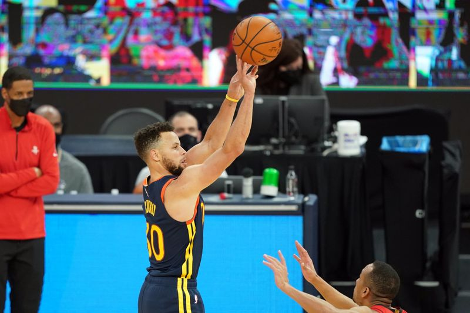

Steph Curry’s offensive explosion helps Warriors crush Rockets
Stephen Curry poured in a game-high 38 points to move within 18 of Wilt Chamberlain’s career franchise record Saturday night, lifting the Golden State Warriors to a 125-109 victory over the visiting Houston Rockets.
Andrew Wiggins chipped in with 25 points and Jordan Poole 21 off the bench for the Warriors, who were coming off a potential soul-crushing, 110-107 home loss to Washington the night before in their pursuit for a bottom-end playoff spot in the Western Conference.
John Wall, who sat out Friday’s 126-109 road loss to the Los Angeles Clippers, returned to pace the Rockets with 30 points.
Saddled with three early fouls, Curry was held to 10 first-half points before exploding for 22 in the third quarter, including Golden State’s final 20 of the period.
Seeking a third win in their last 11 games, the Warriors led 94-80 after three periods, then held off a late charge by the Rockets.
Curry increased his career point total to 17,765, putting him in a position to possibly catch and pass Chamberlain (17,783) as early as Golden State’s next game, which is Monday at home against Denver.
Curry has scored 32 or more points in six straight games, a career-best run and the longest streak of any player in the NBA this season.
Golden State won despite having to go without Kelly Oubre Jr., who injured his wrist in Friday’s loss to Washington, before losing James Wiseman in the first quarter to a knee injury.
Curry, who shot 8-for-15 on 3-pointers, also found time for a team-high eight rebounds.
Mychal Mulder added 10 points for the Warriors, who outshot the Rockets 53.8 percent to 46.6 percent.Draymond Green dished out a game-high-tying seven assists to go with seven rebounds, two points and three steals.
D.J. Augustin had 19 points, while Christian Wood and Kelly Olynyk contributed 18 apiece for the Rockets, who lost for the seventh time in their last eight games.
Olynyk completed the game’s only double-double with 11 rebounds, tying teammate Jae’Sean Tate for game-high honors.
Wall, whose 30-point effort was his fourth of the season, all since March 1, matched Green’s assist total with seven to lead the Rockets.
–Field Level Media
Posted On: 2021-04-12T00:00:00

Content Date: 2021-04-12
Download Date: 2021-04-17
Document ID: L0C04A59Q